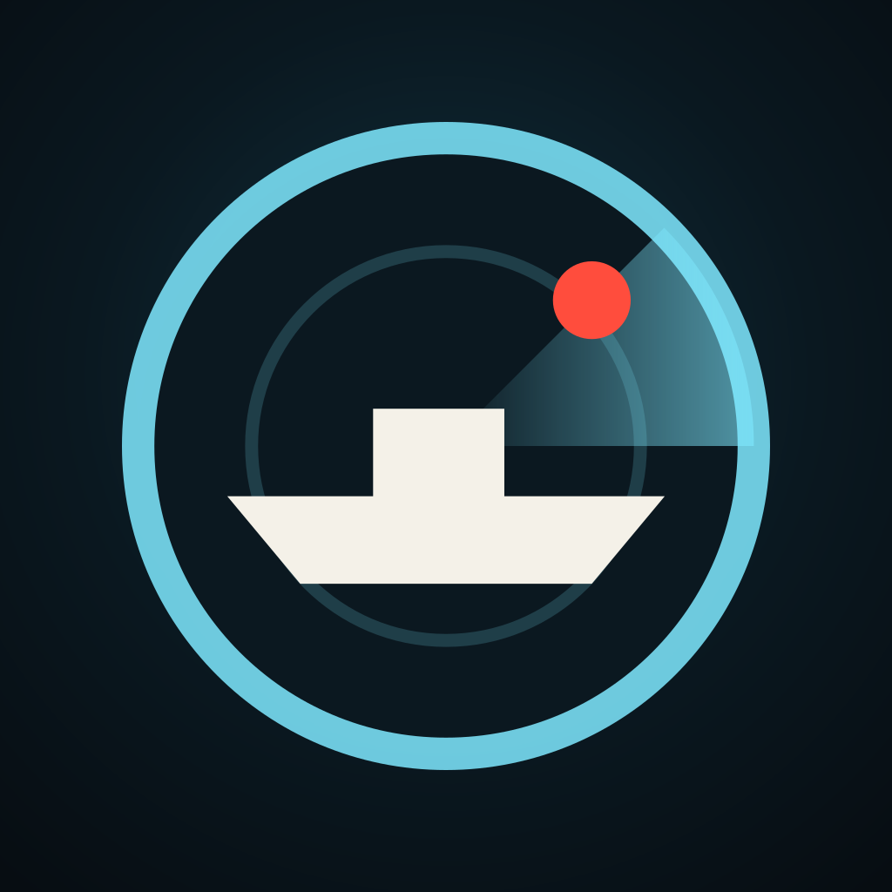
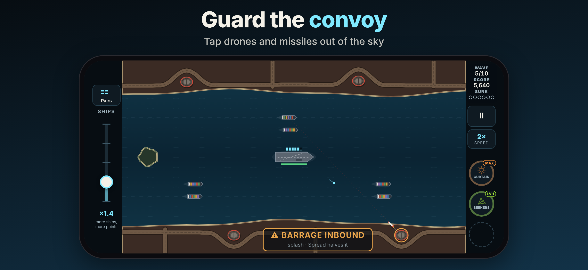
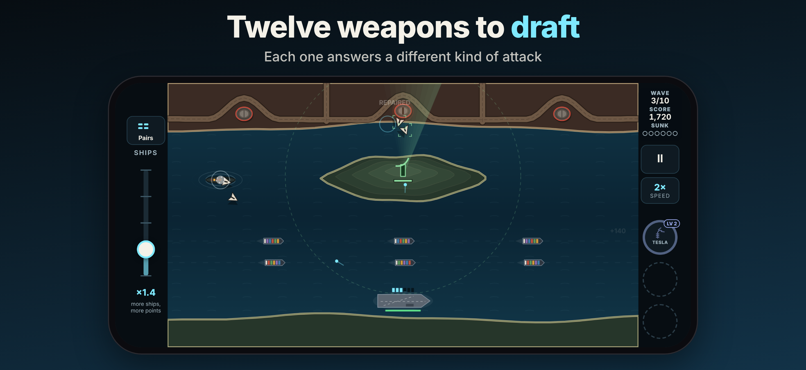
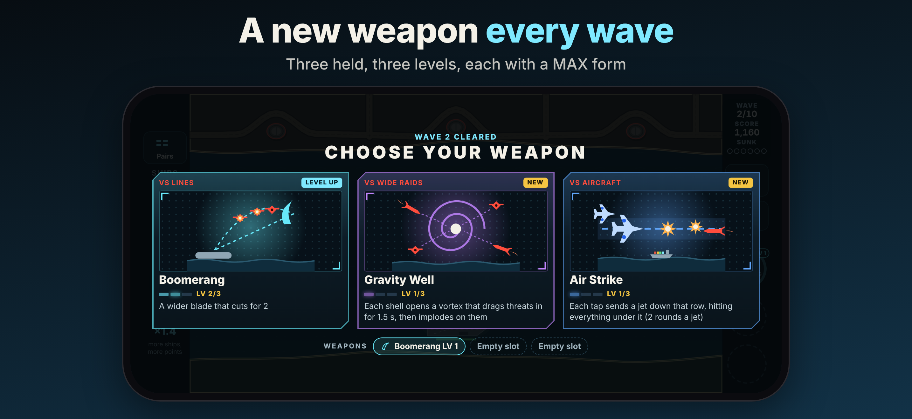
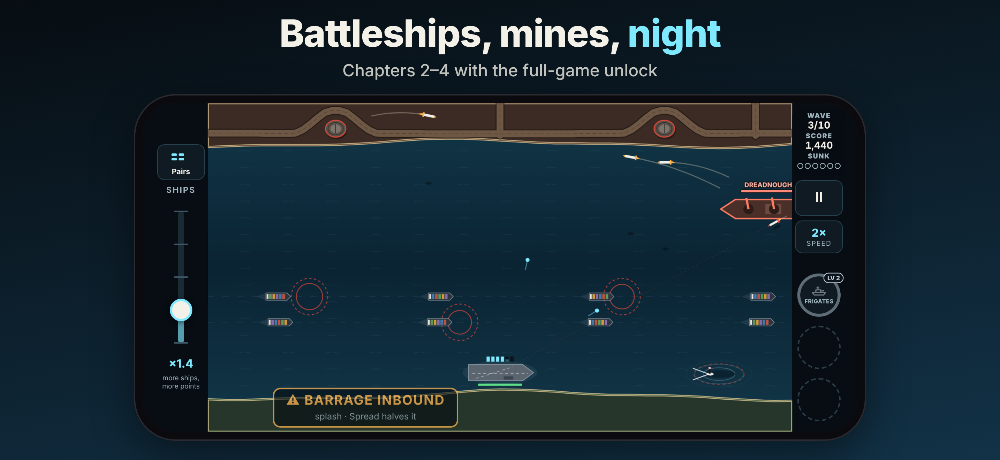
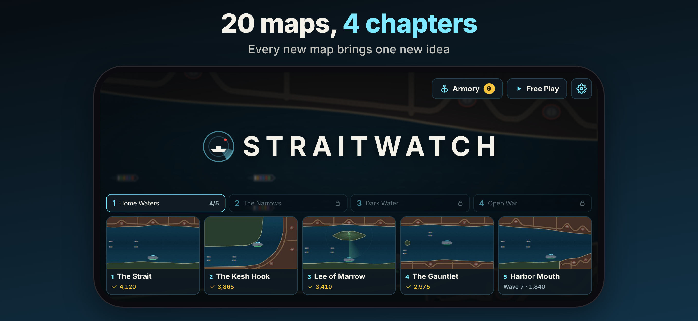
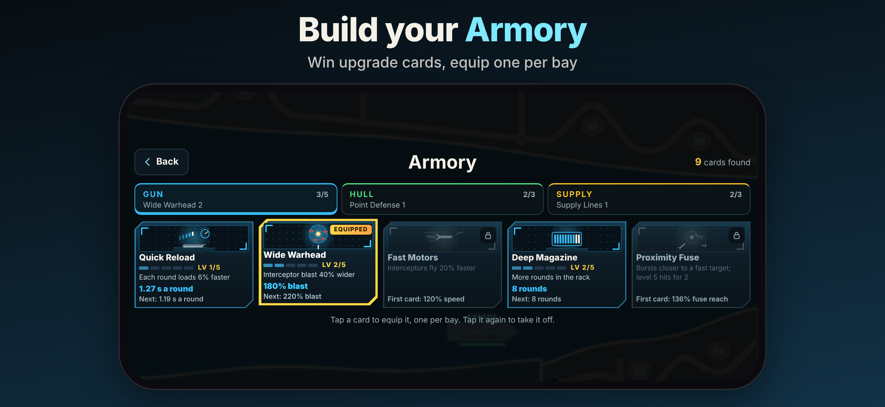

Straitwatch
Convoy defense strategy






Merchant ships are crossing a contested strait, and you are the only thing standing between them and the shore. Tap drones, missiles and jets out of the sky before they reach the convoy.
DEFEND THE CONVOY
• Ships sail across the strait in real time while raids launch from the hostile shore
• Tap a threat to fire the carrier's gun at it; your rack of rounds reloads as you fight
• Ten waves clear a map; lose too many ships and the run is over
• Set the pace: speed up to 2×, and choose how many ships sail for more points
TWELVE WEAPONS
• After every wave, draft one of three weapons: Flak Cannon, Seeker Pod, Aegis Launchers, Gravity Well, Air Strike, Railgun, Tesla Arc, Shrapnel Shell, Frigate Escort, Thermobaric Shell, Scattergun and Boomerang
• Weapons drop from kills; grab one to load your gun with it for 15 seconds
• Hold three at once and level each up to its MAX form
THE ARMORY
• Win upgrade cards at the end of every run: eleven cards across the Gun, Hull and Supply bays
• Duplicates level a card up; equip one card from each bay before a run
TWENTY MAPS IN FOUR CHAPTERS
• Home Waters, The Narrows, Dark Water and Open War
• Each map after the first five adds one new idea: a bending lane, an allied radar, a supertanker, lock gates, shore batteries, drifting mines, oil rigs, night, a battleship, fast boats, two-way traffic, the tide and the Citadel
• Clear a map to unlock the next, then keep going in endless mode
GAME CENTER
• A best-score leaderboard for every map, and achievements
PLAY IT YOUR WAY
• Chapter 1 — five full maps — is free to play. One in-app purchase unlocks chapters 2–4 (fifteen more maps) for good. Restore Purchases is in Settings.
• Plays completely offline. No ads, no account, and no data collected.
• Designed for iPhone in landscape, with haptic feedback and progress saved on your device.
© 2026 Straitwatch